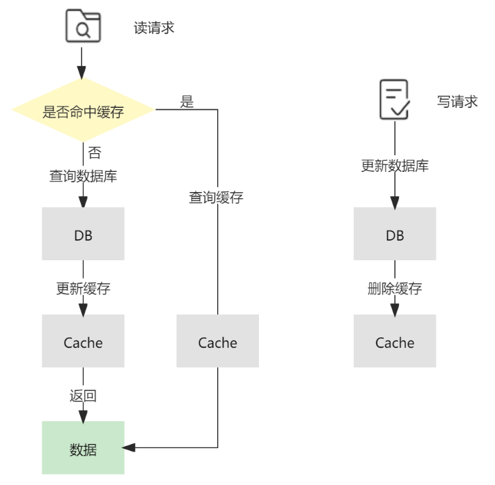

一、场景说明
高频访问数据直接查数据库会导致响应慢，用Redis缓存可将响应时间从毫秒级降至微秒级，减轻数据库压力。
二、实现思路
Cache-Aside 策略
Cache-Aside意为旁路缓存模式，是应用最为广泛的一种缓存策略。
在读请求中，首先请求缓存，若缓存命中（cache hit），则直接返回缓存中的数据；若缓存未命中（cache miss），则查询数据库并将查询结果更新至缓存，然后返回查询出的数据（demand-filled look-aside）。
在写请求中，先更新数据库，再删除缓存（write-invalidate）。
下图展示了它的读写流程：

三、代码实现
下面 Python 代码演示了使用 Redis 缓存 ChargeMappings 数据。
3.1 环境安装
# 安装 Redis 的 Python 客户端
pip install redis
3.2 项目代码
import time
from datetime import datetime
import json
import os
from configparser import ConfigParser
import redis
from sqlalchemy import create_engine, text
from sqlalchemy.orm import Session
config = ConfigParser()
config_path = os.path.dirname(__file__)
config.read(os.path.join(config_path, "db_config.ini"))
mysql = config['mysql_local']
engine = create_engine(f'mysql+pymysql://{mysql["username"]}:{mysql["password"]}@{mysql["server"]}/{mysql["database"]}',
echo=False, future=True, pool_size=10, max_overflow=5, pool_pre_ping=True)
redis_local = config['redis_local']
# 初始化连接池
redis_pool = redis.ConnectionPool(
host=redis_local['host'], # Redis服务地址
port=redis_local['port'], # Redis服务端口
db=redis_local['db'], # 使用的数据库编号
password=redis_local['password'], # Redis密码
decode_responses=True # 自动解码响应内容为字符串（避免b''格式）
)
# 获取客户端（每次操作从连接池里拿连接）
redis_client = redis.Redis(connection_pool=redis_pool)
# 从数据库查询
def query_all_from_db(query_string):
with Session(engine) as session:
result = session.execute(query_string)
return [dict(row._mapping) for row in result]
# 日期类型数据的序列化
def default_serializer(obj):
if isinstance(obj, datetime):
return obj.strftime('%Y-%m-%d %H:%M:%S')
raise TypeError(f"Type {type(obj)} not serializable")
class ChargeMappingsService:
def __init__(self, redis_client):
self.redis_client = redis_client
self.cache_prefix = 'cache:fxapi_charge_mapping:'
self.cache_expire = 3600 # 缓存过期时间，单位秒
def get_charge_mapping_all(self) -> list:
"""
演示读请求
"""
start_time = time.time()
# 在缓存中获取所有charge mappings
all_mappings_key = f'{self.cache_prefix}all'
cached_data_all = self.redis_client.get(all_mappings_key)
if cached_data_all:
print(f"Cache hit for all mappings")
charge_mappings = json.loads(cached_data_all)
cache_time = time.time() - start_time
print(f"Time taken to fetch from cache: {cache_time:.6f} seconds")
return charge_mappings
print(f"Cache miss for all mappings, querying DB...")
# 缓存未命中，查询数据库
db_start_time = time.time()
db_data_all = query_all_from_db(text("SELECT * FROM fxapi_charge_mapping"))
if db_data_all:
# 将查询到的数据写入 Redis 缓存
self.redis_client.setex(
all_mappings_key,
self.cache_expire,
json.dumps(db_data_all, default=default_serializer)
)
db_time = time.time() - db_start_time
print(f"Time taken to fetch from database: {db_time:.6f} seconds")
return db_data_all
def update_charge_mapping(self, mapping_id: int, new_data: dict):
"""
演示写请求：更新数据库中的一条记录，然后删除缓存。
"""
print(f"\n--> [Write Request] Updating mapping ID: {mapping_id} in DB...")
# 1. 先更新数据库
with Session(engine) as session:
stmt = text("UPDATE fxapi_charge_mapping SET ChargeName = :charge_name WHERE id = :id")
session.execute(stmt, {"charge_name": new_data.get("charge_name"), "id": mapping_id})
session.commit()
print("DB updated successfully.")
# 2. 再删除缓存
all_mappings_key = f'{self.cache_prefix}all'
print(f"Invalidating cache key: {all_mappings_key}")
deleted_count = self.redis_client.delete(all_mappings_key)
if deleted_count > 0:
print("Cache invalidated successfully.")
else:
print("Cache key not found, no need to invalidate.")
if __name__ == "__main__":
# 模拟一个读请求：
service = ChargeMappingsService(redis_client)
all_mapping = service.get_charge_mapping_all()
print(f"Total Mappings Retrieved: {len(all_mapping)}")
# 模拟一个写请求：更新ID为1的数据
if all_mapping:
first_mapping_id = all_mapping[0]['id']
service.update_charge_mapping(first_mapping_id, {"charge_name": "NEW_NAME_FOR_TEST"})
all_mapping_after_update = service.get_charge_mapping_all()
print(f"Total Mappings Retrieved after update: {len(all_mapping_after_update)}")
all_mapping_final = service.get_charge_mapping_all()
print(f"Total Mappings Retrieved from cache again: {len(all_mapping_final)}")
3.3 性能对比
"""
读请求
"""
# 从数据库查询数据用时：
Cache miss for all mappings, querying DB...
Time taken to fetch from database: 0.620804 seconds
Total Mappings Retrieved: 11004
# 从Redis缓存中查询数据用时：
Cache hit for all mappings
Time taken to fetch from cache: 0.087084 seconds
Total Mappings Retrieved: 11004
# 性能提升85.97%